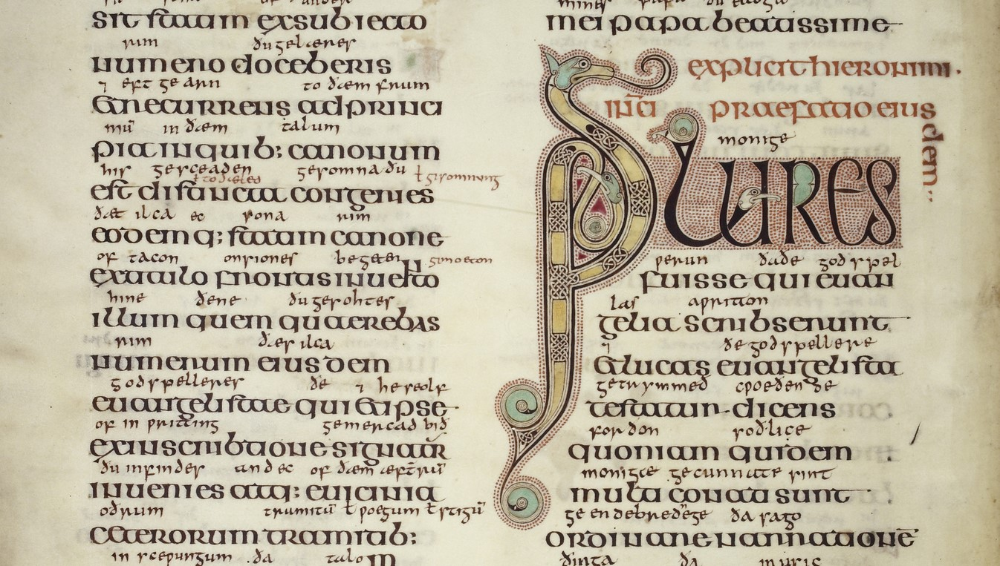

CALLIGRAPHY IS A KIND OF MUSIC NOT FOR THE EARS, BUT FOR THE EYES.
CALLIGRAPHY:
Calligraphy is a visual art related to writing. It is the design and execution of lettering with a pen,
ink brush, or other writing instrument. Contemporary calligraphic practice can be defined as "the art of
giving
form to signs in an expressive, harmonious, and skillful manner"It has a rich history that spans various
cultures and civilizations. Here's a brief overview:
Chinese Calligraphy
Brush Calligraphy
Arabic Calligraphy
Italic Calligraphy
Gothic Calligraphy
Indian Calligraphy
Western Calligraphy
Modern or Contemporary Calligraphy
Japanese Calligraphy
Roman Calligraphy

Lindisfarne Gospels, f. 5v (c) British Library. [700AD]
HISTORY
Where is Calligraphy Originated From:
Calligraphy originated in ancient China. The earliest known examples of calligraphy date back to around
200 BCE in China,
making it one of the oldest forms of decorative handwriting. Chinese calligraphy, with its emphasis on
expressive brushwork
and artistic form, laid the foundation for the development of calligraphic traditions in East Asia and
beyond. The art of
calligraphy then spread to other East Asian countries, such as Japan and Korea, each developing its own
unique styles and
techniques. Over time, calligraphy also gained significance in various other cultures, including the
Islamic world and
medieval Europe.
HISTORY OF CALLIGRAPHY IN EUROPE:
(The
1590
source is Peter
Bales' The writing schoolemaster, containing a section on 'the key of calygraphie'.)
It's weird because, of course, beautiful, 'calligraphic' manuscripts were being written in the British Isles for
many centuries
before 1600. The celebrated Lindisfarne Gospels were written around 700 AD as part of an established tradition
of insular book-hands
, which means that 'the history of calligraphy' (as we think of it) in Britain is by now well over 1,300 years
old. That's around the
same age as Arabic calligraphy, which started in earnest in the seventh century AD with the Kufic scripts
developed for copying the
Qur'an.
Looking earlier, to Roman calligraphic efforts, we find monumental capitals (carved in stone) and Latin book
hand (very roughly,
from the first to fourth centuries AD). Chinese brush calligraphy started a little earlier, with the Han
Dynasty, around 206 BC–220 AD –
around the same time as formal Greek hands on papyrus scrolls. Before that, Aramaic and Hebrew book hands showed
calligraphic qualities
with a particular pen-hold for thick-and-thin lines formed using a broad-edged nib. And before that, Egyptian
scrolls go back, ooh,
another thousand years? (googles) omg: 2,400 BC is what the interwebs say for the earliest Egyptian scrolls. I
don't know how
calligraphic they were, but I know hieroglyphics were very carefully painted. For all I know, there were more or
less calligraphic
forms of cuneiform.
Logically, you would think, the history of calligraphy should begin with the earliest scribes who distinguished
themselves with very
beautiful writing and so were employed by the wealthy and powerful (Church, government, aristocrats) to create
legacy manuscripts.
THE RE-IMAGINED HISTORY OF CALLIGRAPHY: EDWARD JOHNSTON:
Even
while
quills were
still very much in use, during the Victorian period, we are treated to the remarkable
sight of enthusiasts
for medieval culture apparently trying to reproduce Gothic script using a pointed pen – a monumentally effortful
exercise in
self-conscious calligraphy and one which (in my opinion) was pretty much doomed.
Responding to such 'bad medievalism' (I'm wildly skipping over masses of event and culture along the way
here) were William
Morris And All That, and out of the Arts & Crafts ethos we get Edward Johnston, who single-handedly
rediscovers the
forgotten broad-edged nib (so the story goes) and, with copious reference to the manuscript evidence and
a great deal
of his own opinion, puts the history of calligraphy firmly back on the path to righteousness, which
turns out for the
vast majority to be the path to hobbyism but produces some blisteringly good calligraphers along the
way.
On
that wave
of interest in medievalism and the rehabilitation of 'the Dark Ages' and research into the origins
of culture and
language, artist-scholars again cultivated an interest in historical handwriting, alongside paleography and
philology, as they had
during the Renaissance and under Charlemagne, and undertook a disciplined analysis and reconstruction of how the
past had preserved
and transmitted its thoughts to the present.
But this time, as far as I can see, the purpose was to revive the perceived aesthetic of the handmade quality of
handwriting and its
historical vibe rather than to bring about a renaissance in the clarity and efficiency of writing technology.
The Kelmscott Press
was never going to overtake Hoe's six-cylinder rotary press as a medium for popular information.
I love the Pre-Raphs, don't get me wrong, but in the end there's only so much green-gowned wistfulness a girl
can take before
needing Burne-Jones to pull himself together and nail up a set of spice shelves, stat.
Islamic Calligraphy
In the Islamic world, calligraphy holds special significance due to the prohibition of representational
art in religious
contexts. Islamic calligraphy, characterized by intricate script and geometric patterns, is widely used
in Quranic manuscripts
and decorative arts.
In the 20th century, calligraphy experienced a revival as artists and designers explored new styles and
techniques. The emphasis shifted
from traditional scripts to more experimental and expressive forms.
Calligraphy has ancient roots, with some of the earliest examples dating back to ancient China around 200
BCE. Chinese
calligraphy is renowned for its expressive brushwork and artistic form.